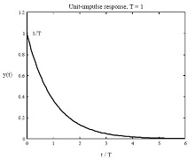
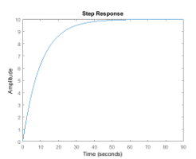
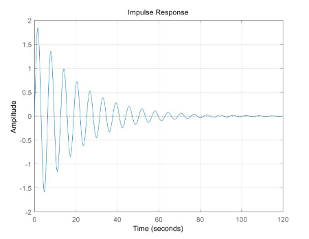
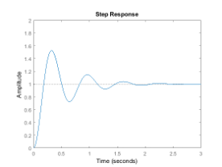
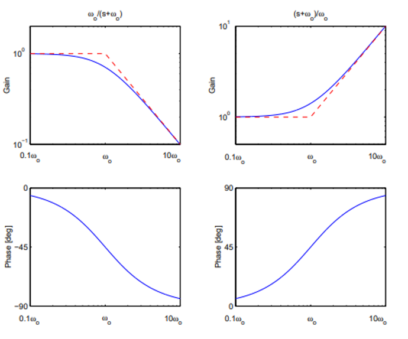
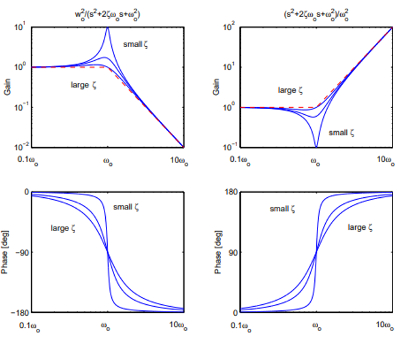
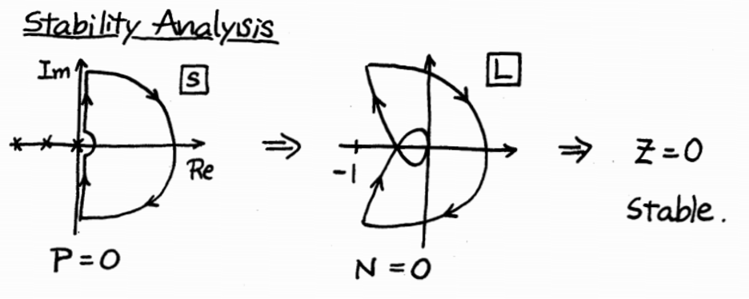

Intro to Control Theory
Last Updated: 15 Jun 2021In previous posts, we explored the field of dynamics, which taught us how to calculate the position, velocity, and acceleration of an object given a set of driving forces. The topic of control theory flips this process around, and seeks an answer to the question: what type of force will produce the desired motion? In other words, if dynamics is the study of rules, controls is the study of how we use those rules to achieve results.
The Goals of Control Theory
Let’s explore the above statement further. In dynamics, we’re usually given a system of parts, a set of forces \(f(x, t)\), and are asked to calculate \(x(t)\), \(v(t)\), and \(a(t)\). Now we could just as easily reverse this around (given, \(a(t)\), \(v(t)\), \(x(t)\), find \(f(t)\), but this doesn’t seem very interesting, nor is this really what control theory is.
The key idea that control theory introduces is of a desired motion or state, which we’ll define with \(x'(t)\), \(v'(t)\), \(a'(t)\) (not be confused with derivatives). Thus, a better problem statement would be: find f(t) that minimizes error between our desired state and actual state.
\[min | x(t) - x'(t) | + | v(t) - v'(t) | + | a(t) - a'(t) |\]This is a bit more realistic because “close” is way easier than exactly equal. But as any engineer may point out, we are not only interested in the answer - the margins are just as important. Thus control theory seeks to understand how systems responds to inputs. Then, we can take these theories and design controllers to achieve particular goals.
The design of a controller should strive to achieve the following:
- Stable
- Tracking – keeping y(t) close to command input
- Regulation – keeping y(t) constant in the presence of disturbances
- Control Effort – keeping u(t) to a minimum
Modeling Systems with Differential Equations
It goes without saying that highly complex systems are difficult to model, but that’s largely because of the number of interactions which exist. Depending on the system, a few common relationships are likely to be present:
- State relationships - The interest you make on your savings is related to how much money you have saved (the state).
- Rate relationships - Aerodynamic drag increase with speed, making it a rate relationship.
- Acceleration relationships - Damping mechanisms are acceleration relationships, often used to counteract sudden changes.
These relationships can be linear, exponential, logarithmic, etc.
Linear First and Second Order Systems
First order
Differential Equation
\[b\frac{\partial x}{\partial t}+kx=0\]Transfer Function
\[H(s)=\ \frac{a}{s+\sigma}\]Poles
\[-\sigma\] \[\sigma=\frac{k}{b}\]Impulse Response Curve
\[x\left(t\right)=ae^{-t/\tau}\]
- Time Constant
- A term defined only for first order systems, after τ seconds, only 37% of initial value remains
Step Response Curve
\[y\left(t\right)=\frac{a}{\sigma}\left(1-e^{-t/\tau}\right)\]
Second Order Systems
Differential Equation
\[m\frac{\partial^2x}{\partial t^2}+b\frac{\partial x}{\partial t}+kx=0\]Transfer Function
\[H(s)=\ \frac{\omega_n^2}{s^2+2\zeta\omega_ns+\omega_n^2}\] \[H(s)=\ \frac{\sigma^2+\omega^2}{(s+\sigma)^2+\omega^2}\]Poles
\[-\sigma\pm j\omega\] \[\sigma=\ \zeta\omega_n\] \[\omega=\ \omega_n\sqrt{1-\zeta^2}\] \[\omega_n=\sqrt{\frac{k}{m}}\] \[\xi=\frac{b}{2\sqrt{km}}\]Impulse Response Curve
\[x\left(t\right)=\ \frac{\omega_n}{\sqrt{1-\zeta^2}}e^{\frac{-\zeta}{\sqrt{1-\zeta^2}}\omega t}\sin{\omega t}\]
Step Response Curve
\[Mp=\ e^\frac{-\zeta\pi}{\sqrt{1-\zeta^2}}\] \[Rise\ Time\ \tau_r\cong\ \frac{1.8}{\omega_n}\] \[Settle\ Time\ \tau_s\cong\ \frac{4.6}{\sigma}\] \[Peak\ Time\ \tau_p=\ \frac{\pi}{\omega}\]
Laplace Transform:
Most important take away is that in the Laplace domain, derivation is represented by multiplication, while integration is represented by division.
\[\mathcal{L}\left(\dot{x}(t)\right)=sX(s)+x(0_+)\] \[\mathcal{L}\left[\int_{0}^{t}x\left(t\right)dt\right]=\frac{X(s)}{s}\]Final Value Theorem & Initial Value Theorem:
Where F(s) is the transfer function of the system defined by f(t).
\[f\left(\infty\right)=\ \lim_{s\rightarrow0}{sF(s)}\] \[f\left(0\right)=\ \lim_{s\rightarrow\infty}{sF(s)}\]Stability:
A system can be stable, unstable, or marginally stable.
Stable
- All poles must be in the LHP
Marginally Stable
- There are no poles in the RHP
- There are poles on the imaginary axis
- Poles on the imaginary axis are non-repeated
Unstable
- Any pole in the RHP makes a system unstable
Theorem: Given a system represented by a denominator in expanded form, it is not stable if any coefficients of sn are zero or negative.
Undershoot
Typical in non-minimum phase systems (defined as having a zero in the RHP).
Poles & Zeros
A pole is a value of s such that the denominator of the transfer function will be equal to zero. Meanwhile, a zero is defined as a value of s such that the numerator of the transfer function will be equal to zero.
Routh Stability Criterion
Number of sign changes is equal to the number of poles in the RHP.
IMPORTANT: Unstable pole/zero cancellation is not a valid method for achieving stability
Feedback Control Systems:
CL Transfer Function Numerator
| R | W | V | |
| Y | GD | G | -GD |
| E | 1 | -G | GD |
| U | D | -GD | -D |
Where the denominator is the same for all: 1+GD
System Type
A transfer function and the system it represents is said to be type k if a polynomial input of tk results in an output converging to a nonzero constant. In practice,
\[H\left(s\right)\ is\ type\ K\ \Leftrightarrow\ H\left(s\right)\ has\ K\ zeros\ @\ origin\]For inputs of magnitude lower than k, output will converge to zero. For inputs of magnitude greater than k, output will diverge.
Steady State Error:
In most cases, steady state error can be found by multiplying the E/R by R to yield E and applying the final value theorem. The below equations are simply shortcuts, that can be used by identifying the system type.
\[Position\ Constant\ K_p=\ \lim_{s\longrightarrow0}{L(s)}\] \[Velocity\ Constant\ K_v=\ \lim_{s\longrightarrow0}{sL\left(s\right)}\] \[Acceleration\ Constant\ K_a=\ \lim_{s\longrightarrow0}{s^2L(s)}\]PID Control:
Classic and very fundamental method of controller. PID stands for proportional, integral, and derivative. Each serves a different purpose for maintaining stability.
\[D\left(s\right)=\ K_P+\frac{K_I}{s}+sK_D\] \[H\left(s\right)=\ \frac{s}{as^3+\left(b+K_D\right)s^2+\left(c+K_P\right)s+K_I}\]| Increase | Effect |
|---|---|
| \(K_P\) | Faster Convergence |
| More oscillations for convergence | |
| No effect on settling time | |
| \(K_D\) | Faster convergence |
| Less oscillation | |
| \(K_I\) | More oscillations |
| No steady state error |
Lead-Lag Compensator
Lead compensators improve transient response and is a variety of PD control, while lag compensators improve steady state response, and is a variety of PI control.
\[Lead\ Compensator:\ D\left(s\right)=K\frac{\left(s-z\right)}{\left(s-p\right)}\ where\ z<p\] \[Lag\ Compensator:\ D\left(s\right)=K\frac{\left(s-z\right)}{\left(s-p\right)}\ where\ p<z\] \[\alpha=\ \frac{z}{p}\]Root Locus
A root locus plot is defined as the plot of the roots of 1+KL(s) on the complex plane as K tends from -∞ to +∞. When drawing a root locus, follow these rules:
Define: m zeroes and n poles.
- The root locus is symmetric about the real axis
- The root locus starts from n poles of L(s). m branches approach m zeros of L(s). n-m branches go to infinity.
- The portion of the real axis to the left of an odd number of poles and zeroes is part of the root locus. (Plot the poles/zeroes of L(s) that are on the real axis and label them A, B, C from right to left. Then the segments, AB, CD, … are part of the root locus.)
- There are n-m branches of the root locus that approach the following asymptotes
- Departure angles measured from poles, arrival angles measured at zeros. q is the multiplicity of each pole/zero.
Bode Plots
Bode plots are simply plots of magnitude vs frequency and phase angle vs frequency.


Nyquist Plots
A Nyquist plot is L(jw) on the complex plane as frequency tends from minus infinity to positive infinity. Motivation for using Nyquist plots is that we can determine closed loop stability by examining the open loop (L(jw)). Can be sketched from the bode plots, or by mapping a plot of the range of frequencies.
\[Z=P-N\]Where Z is the number of unstable closed loop poles. P is the number of unstable open loop poles, and N is the number of counterclockwise encirclements of -1.

Stability Margins
\[\left|L\left(j\omega_c\right)\right|=1\] \[\angle L\left(j\omega_p\right)=\ -180\] \[Gain\ Margin=\ \frac{1}{\left|L\left(j\omega_p\right)\right|}\] \[Phase\ Margin=\ \angle L\left(j\omega_c\right)+180\cong100\zeta\] \[\omega_{c\ }\cong\frac{\omega_n}{1+\zeta^2}\]Where \(\omega_c\) is defined as the gain crossover frequency and \(\omega_p\) is defined to be the phase crossover frequency. On a Nyquist plot, gain crossover frequency is when the graph crosses a circle of radius 1, and phase crossover is when the it crosses the negative real axis. Gain margin is the maximum factor which gain can be increased without making CLS unstable. Phase margin is the maximum angle by which phase can be decreased without making CLS unstable.